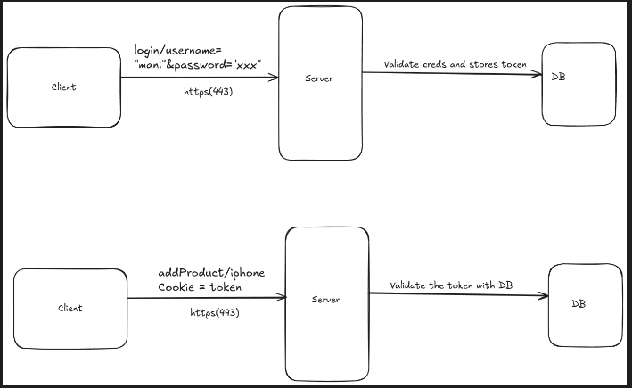

Home
JWT
JWT is a stateless token based authentication system, which is better than
our traditional token based stuff.
Traditional Token Based approach
- A user logins into our application with username and password.
-
After validating username and password, we will generate a unique
session token and sets in the cookie of the response and also will store
in our server DB.
-
For future requests we don't need to send username and password
everytime, we will validate whether the cookie has the token that
matches our database.

What JWT does
- It contains 3 parts Header, Data, signature.
- Header => Basically the type of algorithm, eg: HS256, RSA
-
Data => Usually user information like userId, ProfilePicid etc(some
basic stuff, not important information)
-
Signature => the BE will have a secret key which can be used to encrypt
Flow
-
Client sends a login request, servers validates the creds with DB and
creates two token one is JWT based token(access_token), this can be a
short lived token of expiry upto 1-2hr, and another normal
token(refresh_token) this can be long lived and be stored in database.
-
Client can store the JWT access token in cookie, refresh_token am not
sure(TBD)
-
For future request client can send the access_token and the server
validates and gives the response.
-
if the access_token expired, client can send a post request with
refresh_token to get the new access_token.
-
Why two tokens? => Bcoz JWT token is stateless and having only one token
can be very vulnerable, if it got into any hands of attacker, server
don't know whether the token is ok or not.
- On logout, refresh tokens should be deleted.
-
Also its better to remove the refresh_token periodically(based on some
expiry time)